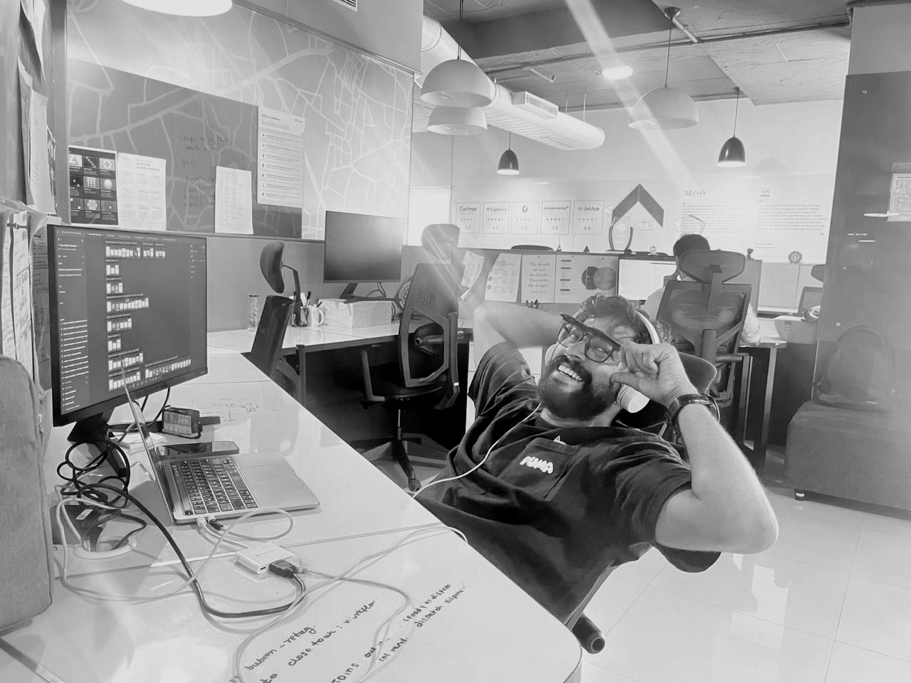

About me
Digital Product Designer | Enterprise B2B SaaS
I design complex products that feel simple to use.
I’m Suraj, a digital product designer working across mobile apps, web platforms and design systems. I design for people under pressure, whether that’s someone managing a busy dashboard or someone completing a task on their phone in seconds.

About me
I enjoy untangling complex products.
Most of my work sits in enterprise software, where workflows are dense, users are busy and mistakes are costly. I’ve designed end-to-end mobile flows, data-heavy dashboards, configuration tools and multi-step forms, always asking what someone needs to see, decide and do at that exact moment.
I care about structure before screens. I map the information architecture, question where each action belongs, and push for patterns that hold up beyond the happy path. I’ve also built and maintained design system components in Figma, so teams can design faster and stay consistent.
I like to build what I design. I prototype interactions in HTML and code so stakeholders can click through real behaviour, not just look at static frames. And I value honest critique, giving it and receiving it, because that’s where good design usually comes from.
If it can’t be understood in three seconds, it isn’t done.
How I work
- 01
Structure before screens.
Information architecture first, so every action has an obvious home.
- 02
Think like the user first, designer second.
What someone needs to see, decide and do, at that exact moment.
- 03
Solve the edge cases before engineering finds them.
Patterns that hold up beyond the happy path.
- 04
Prototype in code.
So ideas can be tested, not just admired.
Capabilities
- Product design
- Mobile apps
- Web platforms
- Information architecture
- Design systems
- Interaction design
- UX writing
- Design critique
- Coded prototypes
Want to see how this plays out in real projects?